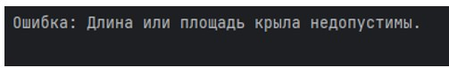

Задания по языку программирования java
Задание номер один: Уплотнить матрицу, удаляя из нее строки и столбцы, заполненные нулями.
Результат:
Задание номер два: Создать классы, спецификации которых приведены ниже. Определить конструкторы и методы setТип(), getТип(), toString(). Определить дополнительно методы в классе, создающем массив объектов. Задать критерий выбора данных и вывести эти данные на консоль. В каждом классе, обладающем информацией, должно быть объявлено несколько конструкторов.
Patient: id, Фамилия, Имя, Отчество, Адрес, Телефон, Номер медицинской карты, Диагноз. Создать массив объектов. Вывести: a) список пациентов, имеющих данный диагноз; b) список пациентов, номер медицинской карты которых находится в заданном интервале.
Результат:
Задание номер три : Создать объект класса Дом, используя классы Окно, Дверь. Методы: закрыть на ключ, вывести на консоль количество окон, дверей.
Результат:
Задание номер четыре : показ харрактеристик компьютера.
Результат:
Задание номер пять : Напечатать квитанцию об оплате телеграммы, если стоимость одного слова задана.
Результат:
Задание номер шесть : Выполнить задания из задачи № 3, реализуя собственные обработчики исключений и исключения ввода/вывода.
Результат:

Задание номер семь : сделать что-то похожее.
Результат:
Задание номер восемь : Составить описание класса одномерных массивов строк, каждая строка которого задается длинной и указателем на выделенную на нее память. Предусмотреть при этом возможность обращения к отдельным строкам массива по индексам, контроля выхода за пределы индексов, выполнения операций поэлементового сцепления двух массивов с образованием нового массива, слияния двух массивов с исключением повторяющихся элементов,печать (вывода на экран) элементов массива и всего массива
Результат:
Задание номер девять : Игра: разработать программу, которая позволит имитировать игру человека с компьютером: случайным образом извлекается какая-либо из имеющихся карточек и выдается записанное на ней число. Каждый игрок заносит это число в одну из клеток квадрата, и так продолжается до тех пор, пока не будут заполнены все клетки квадрата.
Результат:
назад в главную